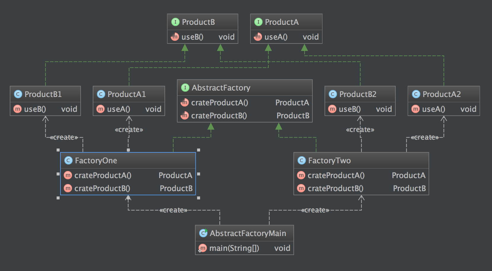

定义
抽象工厂模式 Abstract Factory Pattern：提供一个创建一系列相关或相互依赖对象的接口，而无须指定它们具体的类。
使用场景
- 一个系统不应当依赖于产品类实例如何被创建、组合和表达的细节，这对于所有类型的工厂模式都是重要的。
- 系统中有多于一个的产品族，而每次只使用其中某一产品族。
- 属于同一个产品族的产品将在一起使用，这一约束必须在系统的设计中体现出来。
- 系统提供一个产品类的库，所有的产品以同样的接口出现，从而使客户端不依赖于具体实现。
UML 图

AbstractFactory：抽象工厂
ConcreteFactory：具体工厂
AbstractProduct：抽象产品
Product：具体产品
简单实现
步骤
- 创建产品抽象类
- 创建产品族
- 创建抽象工厂方法，返回产品族
- 创建具体抽象方法
- 客户端调用
例子
public interface ProductA {
void useA();
}
public class ProductA1 implements ProductA {
@Override
public void useA() {
System.out.println("ProductA1 useA1");
}
}
public class ProductA2 implements ProductA {
@Override
public void useA() {
System.out.println("ProductA2 useA2");
}
}
public interface ProductB {
void useB();
}
public class ProductB1 implements ProductB {
@Override
public void useB() {
System.out.println("ProductB1 useB1");
}
}
public class ProductB2 implements ProductB {
@Override
public void useB() {
System.out.println("ProductB2 useB2");
}
}
public interface AbstractFactory {
ProductA crateProductA();
ProductB crateProductB();
}
public class FactoryOne implements AbstractFactory {
@Override
public ProductA crateProductA() {
return new ProductA1();
}
@Override
public ProductB crateProductB() {
return new ProductB1();
}
}
public class FactoryTwo implements AbstractFactory {
@Override
public ProductA crateProductA() {
return new ProductA2();
}
@Override
public ProductB crateProductB() {
return new ProductB2();
}
}
客户端调用
public class AbstractFactoryMain {
public static void main(String[] args) {
System.out.println("AbstractFactoryMain RUNNING");
AbstractFactory factory = new FactoryOne();
factory.crateProductA().useA();
factory.crateProductB().useB();
System.out.println("-------");
factory = new FactoryTwo();
factory.crateProductA().useA();
factory.crateProductB().useB();
}
}
结果
AbstractFactoryMain RUNNING
ProductA1 useA1
ProductB1 useB1
-------
ProductA2 useA2
ProductB2 useB2
类图

优缺点
- 优点
- 抽象工厂模式隔离了具体类的生成，使得客户并不需要知道什么被创建。由于这种隔离，更换一个具体工厂就变得相对容易。所有的具体工厂都实现了抽象工厂中定义的那些公共接口，因此只需改变具体工厂的实例，就可以在某种程度上改变整个软件系统的行为。另外，应用抽象工厂模式可以实现高内聚低耦合的设计目的，因此抽象工厂模式得到了广泛的应用。
- 当一个产品族中的多个对象被设计成一起工作时，它能够保证客户端始终只使用同一个产品族中的对象。这对一些需要根据当前环境来决定其行为的软件系统来说，是一种非常实用的设计模式。
- 增加新的具体工厂和产品族很方便，无须修改已有系统，符合“开闭原则”。
- 缺点
- 在添加新的产品对象时，难以扩展抽象工厂来生产新种类的产品，这是因为在抽象工厂角色中规定了所有可能被创建的产品集合，要支持新种类的产品就意味着要对该接口进行扩展，而这将涉及到对抽象工厂角色及其所有子类的修改，显然会带来较大的不便。
- 开闭原则的倾斜性（增加新的工厂和产品族容易，增加新的产品等级结构麻烦）。
## 总结
- 抽象工厂模式提供一个创建一系列相关或相互依赖对象的接口，而无须指定它们具体的类。抽象工厂模式又称为Kit模式，属于对象创建型模式。
- 抽象工厂模式包含四个角色：抽象工厂用于声明生成抽象产品的方法；具体工厂实现了抽象工厂声明的生成抽象产品的方法，生成一组具体产品，这些产品构成了一个产品族，每一个产品都位于某个产品等级结构中；抽象产品为每种产品声明接口，在抽象产品中定义了产品的抽象业务方法；具体产品定义具体工厂生产的具体产品对象，实现抽象产品接口中定义的业务方法。
- 抽象工厂模式是所有形式的工厂模式中最为抽象和最具一般性的一种形态。抽象工厂模式与工厂方法模式最大的区别在于，工厂方法模式针对的是一个产品等级结构，而抽象工厂模式则需要面对多个产品等级结构。
- 抽象工厂模式的主要优点是隔离了具体类的生成，使得客户并不需要知道什么被创建，而且每次可以通过具体工厂类创建一个产品族中的多个对象，增加或者替换产品族比较方便，增加新的具体工厂和产品族很方便；主要缺点在于增加新的产品等级结构很复杂，需要修改抽象工厂和所有的具体工厂类，对“开闭原则”的支持呈现倾斜性。
- 抽象工厂模式适用情况包括：一个系统不应当依赖于产品类实例如何被创建、组合和表达的细节；系统中有多于一个的产品族，而每次只使用其中某一产品族；属于同一个产品族的产品将在一起使用；系统提供一个产品类的库，所有的产品以同样的接口出现，从而使客户端不依赖于具体实现。
参考
http://design-patterns.readthedocs.org/zh_CN/latest/creational_patterns/abstract_factory.html
『head first 设计模式』